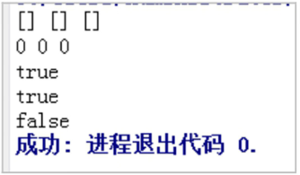
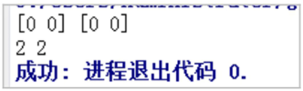
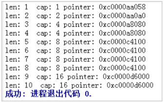
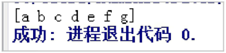
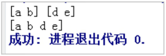

首页 > 编程笔记
Go语言切片的创建和使用（非常详细）
Go语言提供了另一种数据类型——切片（Slice），由于切片的数据结构中有指向数组的指针，因此它是一种引用类型。Go语言中切片的内部结构包含地址、大小和容量，切片一般用于快速操作数据集合。
切片是围绕动态数组的概念构建的，可以按需自动增长和缩小。
切片的动态增长是通过内置函数 append() 来实现的，这个函数可以快速且高效地增长切片，也可以通过对切片再次切割，缩小一个切片的大小。因为切片的底层内存也是在连续内存块中分配的，所以，切片还能获得索引、迭代及为垃圾回收优化的好处。
从连续内存区域生成切片是常见的操作，格式如下：
从数组生成切片，例如：
从数组或切片生成新的切片的特性如下：
Go语言切片的声明的语法格式如下：
切片声明的使用过程如下：
在以上代码中：
请看下面的Go语言示例：
其中，a 和 b 均是预分配两个元素的切片，只是 b 的内部存储空间已经分配了 10 个，但实际使用了两个元素。容量不会影响当前的元素个数，因此 a 和 b 取 len 都是 2。
当使用 make() 函数时，需要传入一个参数，用于指定切片的长度，例如：
切片创建新的切片，新切片会和原有切片共享底层数组，也能通过后期操作来访问多余容量的元素。不过不允许创建容量小于底层数组长度的切片，例如：
例如，创建长度和容量都是 100 个元素的切片：
在Go语言中，nil 切片是很常见的创建切片的方法。nil 切片多用于标准库和内置函数，在需要描述一个目前暂时不存在的切片时，nil 切片十分好用。
例如，函数要求返回一个切片但发生异常时，利用初始化，通过声明一个切片可以创建一个 nil 切片：
nil 切片还可以用来表示空集合，例如，数据库查询返回 0 个查询结果。nil 切片和普通切片一样，调用内置函数 append()、len() 和 cap() 的效果都是相同的。
切片在扩容时，容量的扩展规律是按容量的2倍数进行扩充的，例如：
在以上代码中：
从以上代码中可以得出结论：切片的长度 len 并不等于切片的容量 cap。
append() 函数除了可以添加一个元素外，还可以同时添加多个元素，例如：
在以上代码中：
copy() 函数的语法格式如下：
例如，使用 copy() 函数将一个切片复制到另一个切片。
999
0 999
4 5 2 3 4
在以上代码中：
其中，从尾部删除切片元素的速度最快。
例如，删除切片指定位置的元素，Go语言代码如下：
在以上代码中：
注意：Go语言中删除切片元素的本质是，以被删除元素为分界点，将前后两个部分的内存重新连接起来。
切片是围绕动态数组的概念构建的，可以按需自动增长和缩小。
切片的动态增长是通过内置函数 append() 来实现的，这个函数可以快速且高效地增长切片，也可以通过对切片再次切割，缩小一个切片的大小。因为切片的底层内存也是在连续内存块中分配的，所以，切片还能获得索引、迭代及为垃圾回收优化的好处。
1. 创建切片
在Go语言中，创建切片的方法有多种，而能否确定切片的容量是创建切片的关键，它决定了该使用哪种方式创建切片。1) 从数组或切片生成新的切片
切片默认指向一段连续内存区域，可以是数组，也可以是切片本身。从连续内存区域生成切片是常见的操作，格式如下：
slice [开始位置 : 结束位置]
对格式的说明：- slice 表示目标切片对象。
- 开始位置表示对应目标切片对象的索引。
- 结束位置表示对应目标切片的结束索引。
从数组生成切片，例如：
var a = [3]int{1, 2, 3}
fmt.Println(a, a[1:2])
其中，a 是一个含有 3 个整型元素的数组，被初始化为数值 1～3，使用 a[1:2] 可以生成一个新的切片，运行结果如下：
[1 2 3] [2]
其中，[2] 就是 a[1:2] 切片操作的结果。从数组或切片生成新的切片的特性如下：
- 取出的元素数量为结束位置-开始位置。
- 取出元素不包含结束位置对应的索引，切片最后一个元素使用 slice[len(slice)] 获取。
- 当默认开始位置时，表示从连续区域开头到结束位置。
- 当默认结束位置时，表示从开始位置到整个连续区域末尾。
- 两者同时默认时，与切片本身等效。
- 两者同时为 0 时，等效于空切片，一般用于切片复位。
- 根据索引位置取切片 slice 元素值时，取值范围是（0～len(slice)-1），超界会报运行时错误，生成切片时，结束位置可以填写 len(slice) 但不会报错。
2) 直接声明新的切片
除了可以从原有的数组或者切片中生成切片外，也可以声明一个新的切片，每种类型都可以拥有其切片类型，表示多个相同类型元素的连续集合，因此，切片类型也可以被声明。Go语言切片的声明的语法格式如下：
var name []Type
对格式的说明：- name 表示切片类型的变量名称。
- Type 表示切片类型对应的元素类型。
- 切片不需要说明长度。
切片声明的使用过程如下：
package main
import "fmt"
func main() {
//声明字符串切片
var strList []string
//声明整型切片
var numList []int
//声明一个空切片
var numListEmpty = []int{}
//输出3个切片
fmt.Println(strList, numList, numListEmpty)
//输出3个切片大小
fmt.Println(len(strList), len(numList), len(numListEmpty))
//切片判定空的结果
fmt.Println(strList == nil)
fmt.Println(numList == nil)
fmt.Println(numListEmpty == nil)
}
运行结果如图1所示。

图1：直接生成新切片
图1：直接生成新切片
在以上代码中：
- 第5行，声明一个字符串切片，切片中拥有多个字符串。
- 第7行，声明一个整型切片，切片中拥有多个整型数值。
-
第9行，将 numListEmpty 声明为一个整型切片，本来会在
{}中填充切片的初始化元素，这里没有填充，所以切片是空的，但是此时的 numListEmpty 已经被分配了内存，只是还没有元素。 - 第11行，切片均没有任何元素，3 个切片输出元素内容均为空。
- 第13行，没有对切片进行任何操作，strList 和 numList 没有指向任何数组或者其他切片。
- 第15行和第16行，声明但未使用的切片的默认值是 nil，strList 和 numList 也是 nil，所以和 nil 比较的结果是 true。
- 第17行，numListEmpty 已经被分配到了内存，但没有元素，因此和 nil 比较时是 false。
3) 使用make()函数构造切片
如果需要动态地创建一个切片，可以使用 make() 内建函数，语法格式如下：make( []Type, size, cap )
对格式的说明：- Type 是指切片的元素类型。
- size 指的是为这个类型分配多少个元素。
- cap 为预分配的元素数量，该值设定后不影响 size，只是能提前分配空间，降低多次分配空间造成的性能问题。
请看下面的Go语言示例：
package main
import "fmt"
func main() {
a := make([]int, 2)
b := make([]int, 2, 10)
fmt.Println(a, b)
fmt.Println(len(a), len(b))
}
运行结果如图2所示。

图2：使用 make() 函数构造切片
图2：使用 make() 函数构造切片
其中，a 和 b 均是预分配两个元素的切片，只是 b 的内部存储空间已经分配了 10 个，但实际使用了两个元素。容量不会影响当前的元素个数，因此 a 和 b 取 len 都是 2。
当使用 make() 函数时，需要传入一个参数，用于指定切片的长度，例如：
//创建一个字符串切片 //其长度和容量都是5个元素 slice := make([]string,5)如果只指定长度，那么切片的容量和长度相等。也可以分别指定长度和容量，例如：
//创建一个整型切片 //其长度为3个元素,容量为5个元素 slice := make([]int,3,5)分别指定长度和容量时，创建出来的切片的底层数组长度就是创建时指定的容量，但是初始化后并不能访问所有的数组元素。在以上代码中，切片可以访问 3 个元素，而底层数组拥有 5 个元素，因此剩余的 2 个元素可以在后期操作中合并到切片，然后才可以通过切片访问这些元素。
切片创建新的切片，新切片会和原有切片共享底层数组，也能通过后期操作来访问多余容量的元素。不过不允许创建容量小于底层数组长度的切片，例如：
//创建一个整型切片 //其长度大于容量 slice := make([]int,5,3)这时编译器会出现如下错误：
Compiler Error:
len larger than cap in make([]int)
4) 使用切片字面量创建切片
使用切片字面量创建切片和创建数组类似，只是不需要指定[]运算符中的值，初始的长度和容量会根据初始化时提供的元素的个数来确定，例如：
//创建字符串切片
//其长度和容量都是5个元素
slice := []string{ " red ", "blue ", "green ", "yellow ", "pink "}
//创建一个整型切片
//其长度和容量都是3个元素
slice := []int{10,20,30}
当使用切片字面量时，可以设置初始长度和容量，即在初始化时给出所需的长度和容量作为索引（下标）。例如，创建长度和容量都是 100 个元素的切片：
//创建字符串切片
//使用空字符串初始化第100个元素
slice := []string{ 99:""}
如果在[]运算符中指定了一个值，那么创建的就是数组而不是切片；只有不指定值的时候才会创建切片，例如：
//创建含有3个元素的整型数组
array := [3]int{10,20,30}
//创建长度和容量都是3的整型切片
slice := []int{10,20,30}
5) 创建空（nil）切片
有时程序可能需要声明一个值为空的切片（或 nil 切片），在声明的时候不做任何初始化，就可以创建一个 nil 切片，例如：//创建nil整型切片 var slice []int一个切片在未初始化之前默认为 nil，长度为 0。
在Go语言中，nil 切片是很常见的创建切片的方法。nil 切片多用于标准库和内置函数，在需要描述一个目前暂时不存在的切片时，nil 切片十分好用。
例如，函数要求返回一个切片但发生异常时，利用初始化，通过声明一个切片可以创建一个 nil 切片：
//使用make创建空的整型切片
slice := make([]int, 0)
//使用切片字面量创建空的整型切片
slice := [ ]int{}
nil 切片在底层数组中包含 0 个元素，也没有分配任何存储空间。nil 切片还可以用来表示空集合，例如，数据库查询返回 0 个查询结果。nil 切片和普通切片一样，调用内置函数 append()、len() 和 cap() 的效果都是相同的。
2. 使用append()函数添加元素
Go语言的内建函数 append() 可以为切片动态添加元素。每个切片会指向一片内存空间，这片空间能容纳一定数量的元素。当空间不能容纳足够多的元素时，切片就会进行“扩容”。扩容操作往往发生在 append() 函数调用时。切片在扩容时，容量的扩展规律是按容量的2倍数进行扩充的，例如：
package main
import "fmt"
func main() {
var numbers []int
for i := 0; i < 10; i++ {
numbers = append(numbers, i)
fmt.Printf("len: %d cap: %d pointer: %p\n", len(numbers), cap(numbers), numbers)
}
}
运行结果如图3所示。

图3：切片的扩容
图3：切片的扩容
在以上代码中：
- 第4行，声明一个整型切片。
- 第6行，循环向 numbers 切片中添加 10 个数。
- 第7行，打印输出切片的长度、容量和指针变化，使用函数 len() 查看切片拥有的元素个数，使用函数 cap() 查看切片的容量情况。
从以上代码中可以得出结论：切片的长度 len 并不等于切片的容量 cap。
append() 函数除了可以添加一个元素外，还可以同时添加多个元素，例如：
package main
import "fmt"
func main() {
var student []string
//添加一个元素
student = append(student, "a")
//添加多个元素
student = append(student, "b", "c", "d")
//添加切片
team := []string{"e", "f", "g"}
student = append(student, team…)
fmt.Println(student)
}
运行结果如图4所示。

图4：使用 append() 函数添加元素
图4：使用 append() 函数添加元素
在以上代码中：
- 第4行，声明一个字符串切片。
- 第6行，往切片中添加一个元素。
- 第8行，使用 append() 函数向切片中添加多个元素。
- 第10行，声明另一个字符串切片。
-
第11行，在 team 后面加上
…，表示将 team 整个添加到 student 的后面。
3. 切片的复制
Go语言的内置函数 copy() 可以将一个数组切片复制到另一个数组切片中，如果加入的两个数组切片大小不同，那么就会按照较小的数组切片的元素的个数进行复制。copy() 函数的语法格式如下：
copy( destSlice, srcSlice []Type) int
对格式的说明：- srcSlice 为数据来源切片。
- destSlice 为复制的目标（也就是将 srcSlice 复制到 destSlice），目标切片必须分配过空间且足够承载复制的元素个数，并且来源和目标的类型必须一致，copy() 函数的返回值表示实际发生复制的元素个数。
例如，使用 copy() 函数将一个切片复制到另一个切片。
slice1 := []int{1, 2, 3, 4, 5}
slice2 := []int{5, 4, 3}
copy(slice2, slice1) //只复制slice1的前3个元素到slice2中
copy(slice1, slice2) //只复制slice2的3个元素到slice1的前3个位置
切片复制操作后对切片元素的影响，例如：
package main
import "fmt"
func main() {
//设置元素数量为1000
const elementCount = 1000
//预分配足够多的元素切片
srcData := make([]int, elementCount)
//将切片赋值
for i := 0; i < elementCount; i++ {
srcData[i] = i
}
//引用切片数据
refData := srcData
//预分配足够多的元素切片
copyData := make([]int, elementCount)
//将数据复制到新的切片空间中
copy(copyData, srcData)
//修改原始数据的第一个元素
srcData[0] = 999
//打印引用切片的第一个元素
fmt.Println(refData[0])
//打印复制切片的第一个和最后一个元素
fmt.Println(copyData[0], copyData[elementCount-1])
//复制原始数据从4到6(不包含)
copy(copyData, srcData[4:6])
for i := 0; i < 5; i++ {
fmt.Printf("%d ", copyData[i])
}
}
运行结果如下：999
0 999
4 5 2 3 4
在以上代码中：
- 第 5 行，定义元素总量为 1000。
- 第 7 行，预分配拥有 1000 个元素的整型切片，这个切片将作为原始数据。
- 第 9～11 行，将 srcData 填充 0～999 的整型值。
- 第 13 行，将 refData 引用 srcData，切片不会因为等号操作进行元素的复制。
- 第 15 行，预分配与 srcData 等大（大小相等）、同类型的切片 copyData。
- 第 17 行，使用 copy() 函数将原始数据复制到 copyData 切片空间中。
- 第 19 行，修改原始数据的第一个元素为 999。
- 第 21 行，引用数据的第一个元素将会发生变化。
- 第 23 行，打印复制数据的首位数据，由于数据是复制的，因此不会发生变化。
- 第 25 行，将 srcData 的局部数据复制到 copyData 中。
- 第 26～28 行，打印复制局部数据后的 copyData 元素。
4. 切片的删除
Go语言并没有对删除切片元素提供专用的语法或者接口，需要使用切片本身的特性来删除元素，根据要删除元素的位置可以分为以下三种情况：- 从开头位置删除。
- 从中间位置删除。
- 从尾部删除。
其中，从尾部删除切片元素的速度最快。
1) 从开头位置删除
删除开头的元素可以直接移动数据指针，例如：
a = []int{1, 2, 3}
a = a[1:] //删除开头1个元素
a = a[N:] //删除开头N个元素
删除开头的元素也可以不移动数据指针，但是需要将后面的数据向开头移动，可以使用 append() 函数原地完成（所谓原地完成，是指在原有的切片数据对应的内存区间内完成，不会导致内存空间结构的变化），例如：
a = []int{1, 2, 3}
a = append(a[:0], a[1:]…) //删除开头1个元素
a = append(a[:0], a[N:]…) //删除开头N个元素
另外，还可以使用 copy() 函数来删除开头的元素，例如：
a = []int{1, 2, 3}
a = a[:copy(a, a[1:])] //删除开头1个元素
a = a[:copy(a, a[N:])] //删除开头N个元素
2) 从中间位置删除
对于删除中间的元素，需要对剩余的元素进行一次整体的移动，同样可以用 append() 函数或 copy() 函数原地完成，例如：
a = []int{1, 2, 3,…}
a = append(a[:i], a[i+1:]…) //删除中间1个元素
a = append(a[:i], a[i+N:]…) //删除中间N个元素
a = a[:i+copy(a[i:], a[i+1:])] //删除中间1个元素
a = a[:i+copy(a[i:], a[i+N:])] //删除中间N个元素
3) 从尾部删除
a = []int{1, 2, 3}
a = a[:len(a)-1] //删除尾部1个元素
a = a[:len(a)-N] //删除尾部N个元素
删除开头的元素和删除尾部的元素都可以认为是删除中间元素操作的特殊情况。例如，删除切片指定位置的元素，Go语言代码如下：
package main
import "fmt"
func main() {
seq := []string{"a", "b", "c", "d", "e"}
//指定删除位置
index := 2
//查看删除位置之前的元素和之后的元素
fmt.Println(seq[:index], seq[index+1:])
//将删除点前后的元素连接起来
seq = append(seq[:index], seq[index+1:]…)
fmt.Println(seq)
}
运行结果如图5所示。

图5：删除任意位置的元素
图5：删除任意位置的元素
在以上代码中：
- 第4行，声明一个整型切片，保存含有从 a 到 e 的字符串。
- 第6行，使用 index 变量保存需要删除的元素位置。
- 第8行，seq[:index] 表示的就是被删除元素的前半部分，值为 [1 2]，seq[index+1:] 表示的是被删除元素的后半部分，值为 [4 5]。
- 第10行，使用 append() 函数将两个切片连接起来。
- 第11行，输出连接好的新切片，此时，索引为 2 的元素已经被删除。
注意：Go语言中删除切片元素的本质是，以被删除元素为分界点，将前后两个部分的内存重新连接起来。
关注公众号「站长严长生」，在手机上阅读所有教程，随时随地都能学习。内含一款搜索神器，免费下载全网书籍和视频。

微信扫码关注公众号